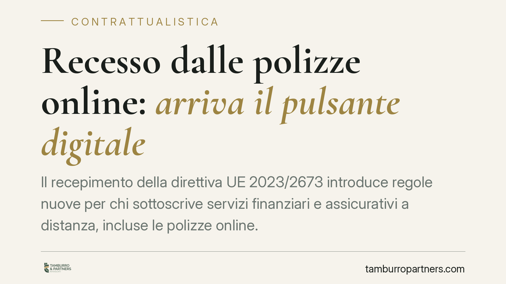

Recesso dalle polizze online: arriva il pulsante digitale
Il recepimento della direttiva UE 2023/2673 introduce regole nuove per chi sottoscrive servizi finanziari e assicurativi a distanza, incluse le polizze online. Tra le novità più attese, un pulsante digitale di recesso e maggiori obblighi informativi a carico delle imprese. Vediamo cosa prevede la disciplina europea, quali punti restano da confermare nel recepimento interno e come il consumatore può tutelarsi fin da ora.

Il quadro normativo
La direttiva (UE) 2023/2673 modifica la direttiva 2011/83/UE sui diritti dei consumatori, inserendo un nuovo capo dedicato ai contratti di servizi finanziari conclusi a distanza (artt. 16-bis e seguenti). Rientrano in questa categoria anche numerose polizze assicurative sottoscritte tramite siti web o app, spesso tramite società *insurtech* (operatori che vendono coperture assicurative attraverso canali esclusivamente digitali).
Il testo europeo fissa come termine per il recepimento negli ordinamenti nazionali il 19 dicembre 2025 e come data di applicazione delle nuove norme il 19 giugno 2026. In Italia l'attuazione passerà attraverso una modifica del Codice del Consumo (D.lgs. 206/2005), nel quale verranno inseriti o riformulati gli articoli dedicati ai servizi finanziari a distanza.
> Avvertenza sul riferimento normativo. Alla data di questo contributo, il decreto legislativo italiano di recepimento è in fase di definizione. Invitiamo a non confondere questa disciplina con il Codice delle Assicurazioni Private (D.lgs. 209/2005), che regola un ambito diverso. Il numero e l'anno del provvedimento di attuazione andranno verificati sulla Gazzetta Ufficiale prima di qualsiasi applicazione pratica.
Le principali novità
Il cuore della riforma è la simmetria tra stipula e recesso. La direttiva stabilisce che, se un contratto può essere concluso online, il consumatore deve poter esercitare il diritto di recesso con la stessa facilità con cui ha sottoscritto.
Da qui il cosiddetto pulsante di recesso (*withdrawal button*): una funzione digitale chiara e permanentemente accessibile, che consente di manifestare la volontà di recedere senza percorsi macchinosi, caselle nascoste o moduli cartacei. L'impresa deve inoltre fornire informazioni precontrattuali complete e in tempo utile prima della firma.
Resta fermo il termine ordinario di quattordici giorni per il recesso dai servizi finanziari a distanza. Attenzione però: la disciplina prevede esclusioni ed eccezioni per determinati prodotti (ad esempio alcune polizze vita con durata o caratteristiche particolari, o servizi il cui prezzo dipenda da fluttuazioni di mercato). Per questo è prudente non generalizzare l'idea di un "rimborso sempre totale e senza oneri": l'ammontare restituito e gli eventuali importi dovuti per la copertura già goduta dipendono dal tipo di contratto e dalla norma applicabile al caso concreto.
La nullità di protezione
Tra gli strumenti di tutela tipici del diritto dei consumatori rientra la nullità di protezione. Si tratta di una forma particolare di invalidità del contratto o di singole clausole, prevista a vantaggio della parte debole del rapporto.
Ha due caratteristiche: può essere rilevata d'ufficio dal giudice, cioè anche senza che la parte la invochi espressamente, ma mai a danno del soggetto tutelato. In pratica, opera solo se e nella misura in cui giova al consumatore. È un rimedio diverso dalle sanzioni amministrative che possono colpire l'impresa inadempiente: i due piani vanno tenuti distinti e la loro concreta applicabilità dipende dal testo definitivo del decreto di recepimento.
Implicazioni pratiche
Per chi sottoscrive polizze online, l'effetto atteso è una maggiore trasparenza e un recesso meno ostacolato. Per le compagnie e gli operatori *insurtech*, si tratta di adeguare interfacce, flussi di sottoscrizione e documentazione precontrattuale entro l'entrata in applicazione delle nuove regole.
Nel periodo transitorio, fino alla pubblicazione del decreto italiano, continuano a valere le norme vigenti sul recesso. Conviene quindi muoversi con prudenza e verificare caso per caso la disciplina applicabile.
Cosa fare in concreto
- Conserva la documentazione precontrattuale e contrattuale ricevuta al momento della sottoscrizione online, comprese le schermate e le email di conferma.
- Verifica sempre la data di decorrenza del contratto e i termini entro cui è possibile recedere: non dare per scontato che siano quattordici giorni per ogni polizza.
- Controlla se la tua polizza rientra tra le eccezioni al recesso previste per determinati prodotti finanziari o assicurativi.
- Esercita il recesso per iscritto e con mezzo tracciabile, anche se è disponibile un pulsante digitale, così da conservare prova della data.
- Rivolgiti a un professionista prima di firmare rinunce o accettare importi di rimborso che non ti risultano chiari.
Consigliamo di seguire gli aggiornamenti sulla pubblicazione del decreto di recepimento, che definirà gli articoli esatti del Codice del Consumo e confermerà le modalità operative del pulsante di recesso.
---
Contributo informativo a cura di Tamburro & Partners - Avv. Giuseppe Tamburro. Non costituisce parere legale.
Ogni contratto ha il suo equilibrio.
Se vuoi una revisione delle clausole o una redazione su misura, scrivi allo studio. Ti rispondiamo entro un giorno lavorativo.